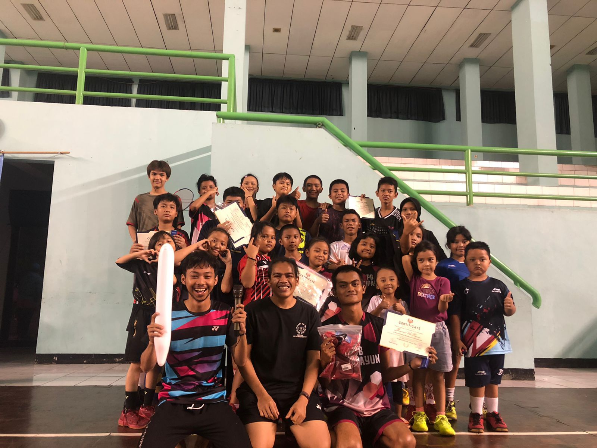

PB. Gelanggang Remaja Cipayung

PB. Gelanggang Remaja Cipayung, yang juga dikenal sebagai Pusat Pelatihan Bulutangkis Cipayung adalah
lembaga olahraga prestisius di Indonesia yang menjadi lumbung bagi atlet-atlet bulutangkis berbakat.
Terletak di Jakarta Timur, fasilitas ini telah melahirkan sejumlah bintang bulutangkis terkemuka yang
mewakili Indonesia dalam berbagai kompetisi internasional. Dengan pelatih-pelatih terbaik dan infrastruktur
yang lengkap, Gelanggang Remaja Cipayung tidak hanya memberikan pelatihan teknis yang unggul, tetapi
juga mendidik para pemain muda tentang nilai-nilai disiplin, dedikasi, dan semangat juang. Sebagai pusat
keunggulan dalam olahraga bulutangkis, lembaga ini telah membuktikan dirinya sebagai salah satu penopang
kejayaan bulutangkis Indonesia.
Profil
Visi
Menjadi lembaga pelatihan bulutangkis terkemuka di dunia yang menciptakan atlet-atlet unggul dan berintegritas,
serta berkontribusi pada prestasi olahraga Indonesia secara global.
Misi
- Mengembangkan atlet-atlet muda berbakat untuk mencapai prestasi tertinggi dalam olahraga bulutangkis,
dengan fokus pada pembinaan teknis, fisik, dan mental.
- Mendorong nilai-nilai disiplin, kerja keras, dan semangat juang dalam setiap atlet yang kami latih.
- Menyediakan fasilitas dan pelatih terbaik untuk memberikan pelatihan berkualitas tinggi kepada
atlet-atlet kami.
- Meningkatkan kerjasama dengan federasi bulutangkis dan lembaga olahraga nasional dan internasional
untuk menghadirkan kompetisi tingkat tinggi.
- Mengintegrasikan pendidikan formal dan pembinaan karakter dalam program pelatihan, sehingga menciptakan
individu yang siap sukses dalam dan di luar lapangan.
- Menyebarkan pengetahuan dan pengalaman kami dalam dunia bulutangkis kepada masyarakat, agar olahraga ini
terus berkembang dan menjadi bagian penting dari budaya Indonesia.
Prestasi PB. Gelanggang Remaja Cipayung
| Nama |
Prestasi |
| Sheyna Nabila Arqih |
Kejurkot & Sirkot 2023 (Juara 1) |
| Fadhlan |
Vinkha Open 2023 (Juara 3) |
| Joyo |
Vinkha Open 2023 (Juara 3) |
KONTAK HUBUNG
Alamat :
Jl. Bantarjati, No.2 Kel. Setu, Kec. Cipayung, Jakarta Timur
Telp/WA : 0857-1455-4637
Instagram